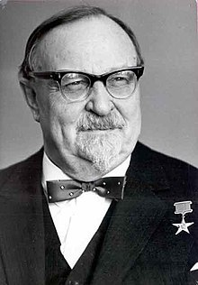

La historia de la biología
La historia de la biología es, al mismo tiempo, el recuento y el estudio del desarrollo de esta disciplina científica, dedicada como su nombre lo indica (del griego bios, “vida”, y logos, “conocimiento” o “discurso”) a la comprensión de los mecanismos y las dinámicas propias de la vida tal y como la conocemos.
Sin embargo, el estudio propiamente dicho de las leyes de la vida data de los primeros filósofos naturalistas de la antigüedad. Así, lo que hoy en día llamamos biología, durante siglos se conoció como filosofía natural o historia natural, y por lo tanto quienes se dedicaban a su estudio eran llamados “filósofos” o “naturalistas”.
Antecedentes de la biología
Resulta difícil marcar un punto de partida en la historia de la biología, ya que el interés del ser humano por el funcionamiento y las necesidades de animales y plantas nos ha acompañado desde siempre, sobre todo desde la Revolución del Neolítico, cuando la agricultura pasó a formar parte de nuestras vidas y se hizo indispensable conocer más sobre ellos.
Así, las distintas civilizaciones antiguas iniciaron el estudio de la vida, sin distinguir entre anatomía humana, zoología, botánica, química, física, etc.
Hubo muchos célebres estudiosos del cuerpo y de la vida en la antigüedad, como Súsruta (c. siglo III a. C.), uno de los sabios fundadores de la medicina tradicional india, cirujano y autor del tratado Súsruta-samija; o el posterior Zhang Zhong Jin (150-209 d. C.), de la escuela de medicina ancestral china. Cada uno se inscribía en una vasta tradición cultural, religiosa y filosófica que sostenía una visión del mundo y de la vida misma.
En occidente, existen también equivalentes egipcios y griegos presocráticos, pero el más célebre estudioso de la vida fue el filósofo griego Aristóteles de Estagira (384-322 a. C.). Entre sus numerosas obras se halla la primera clasificación de los organismos de la cual se tiene registro, y el análisis y descripción de alrededor de 500 diferentes especies animales.
El modelo de pensamiento aristotélico fue de tal importancia que fue mejorado y ampliado por los naturalistas y médicos de las épocas posteriores, sobreviviendo así hasta más allá de la Edad Media. En ese entonces, mientras occidente se sumergía en el oscurantismo y el fanatismo religioso, tuvo lugar entre los siglos VIII y IX (d. C.) la Edad de Oro del islam, con grandes contribuciones a la biología y la medicina.
Nada más en zoología, destacaron el árabe Al-Jahiz (781-869), quien describió algunas de las primeras ideas en torno al evolucionismo y la lucha por la supervivencia a través de la cadena alimentaria; el kurdo Al-Dinawari (828-896), uno de los fundadores de la botánica y estudioso de más de 637 especies diferentes de plantas; y el persa Al-Biruni (973-1048), creador del concepto de la selección artificial y uno de los precursores del evolucionismo.
Occidente contribuyó poco durante la Alta Edad Media al avance de la biología, a pesar de que sí hubo aportes a la materia en las universidades europeas, como Hildegard von Bingen (1098-1179), Alberto Magno (1193-1280) o Federico II de Hohenstaufen (1194-1250). Pero en comparación con el interés que en Europa suscitaron la física y la química, la biología fue poco atendida en ese momento.
La biología en la Revolución Científica
Esto cambió radicalmente con la llegada del Renacimiento y la Edad Moderna. El renovado interés occidental por las ciencias naturales y la fisiología, así como por la medicina moderna, se debió en gran medida a una nueva forma de pensamiento filosófico, caracterizado por el empirismo y la razón. Hubo grandes aportes a la botánica en forma de estudios de herbalismo, y a la zoología a través de numerosos bestiarios.
Gracias a los adelantos en la física y la óptica, la invención del microscopio permitió a finales del siglo XVI el primer estudio con ilustraciones de las primeras células: Micrographia (1665) del británico Robert Hooke (1635-1703).
Posteriormente, las mejoras introducidas por el neerlandés Anton van Leeuwenhoek (1632-1723) al microscopio permitieron incluso un salto más grande hacia adelante: la observación y descripción de la vasta y compleja vida microscópica, así como su relación con la vida macroscópica, a través del descubrimiento de las bacterias, los espermatozoides y otros protozoos.
Por si fuera poco, en esa época se dieron los primeros pasos en el desarrollo de la paleontología, inicialmente como una forma de debate respecto al diluvio universal bíblico.
El danés Nicolás Steno (1638-1686) describió los primeros fósiles y procedimientos de fosilización. Así sentó las bases para las muy posteriores teorías de la evolución y para el concepto mismo de la extinción, que en pleno siglo XVII eran impensables por contravenir las ideas religiosas sobre el origen de la vida.
La biología moderna
La teoría de Darwin es el evento más importante en la historia moderna de la biología.
La biología comenzó a dar sus primeros pasos como campo del saber independiente a finales del siglo XVIII, luego de que se dieran grandes avances en la observación y disección de animales, y sobre todo luego de que el famoso naturalista sueco Carlos Linneo (1707-1778) propusiera su taxonomía básica para el mundo natural.
Su visión de la organización de los reinos de la vida dejó obsoleta la de Aristóteles. Además, Linneo propuso un sistema de nombramiento de las especies que aún empleamos hoy en día, y que consiste en dos términos (género y especie) en latín: Homo sapiens, por ejemplo
Así, entrado el siglo XIX, lo que antiguamente era la fisiología había pasado a llamarse medicina; y lo que eran la historia natural y la filosofía natural fueron cediendo paso a un inmenso conjunto de saberes más especializados: bacteriología, morfología, embriología, etc.
Incluso la geología y la geografía comenzaron a emancipar sus campos del saber, gracias en gran medida a los prolongados viajes de estudio de naturalistas de la talla del alemán Alexander von Humboldt (1769-1859) y el francés Aimé Bonpland (1773-1858), entre muchos otros.
Otro salto cuántico importante se dio en torno al debate sobre el origen de la vida y la teoría evolucionista. La primera teoría de la evolución provino del naturalista francés Jean-Baptiste Lamarck (1744-1829) y, posteriormente, el británico Charles Darwin (1809-1882), responsable de la teoría base que hoy manejamos. Su libro El origen de las especies de 1859 se considera el acontecimiento más importante en la historia moderna de la biología.
A partir de entonces, el conocimiento de la biología no paró de crecer exponencialmente, ayudado en gran medida por las nuevas invenciones y posibilidades que trajo consigo la Revolución Industrial. Grandes y revolucionarios aportes para el campo se dieron gracias a:
-
Gregor Mendell (1822-1884) con sus hallazgos en torno a las leyes de la herencia genética.
-
Ernst Haeckel (1834-1919) con sus estudios de embriología y ecología.
-
Mathias Schleiden (1804-1881) y Theodor Schwann (1810-1882) con sus estudios en torno a la célula como la unidad fundamental de todos los seres vivos.
-
Robert Koch (1843-1910) con los primeros cultivos de bacterias en una placa de Pietri.
-
Louis Pasteur (1822-1895) con su refutación de la Teoría de la generación espontánea (y la invención del método de la pasteurización).
-
Thomas Morgan (1866-1945) con su demostración de que los cromosomas eran los portadores de la información genética.

-
Aleksander Oparin (1894-1980) con su Teoría sobre el origen de la vida, Aleksander Oparin (1894-1980) con su Teoría sobre el origen de la vida, publicada en su libro El origen de la vida sobre la Tierra (1936).
 -
James Watson (1928) y Francis Crick (1916-2004) por su descubrimiento en 1953 de la estructura del ADN, basándose en el trabajo de Maurice Wilkins (1899-1986) y Rosalind Franklin (1920-1958).
A lo largo del siglo XX y XXI los adelantos en materia de biología no se han detenido, sino que son demasiado numerosos como para intentar enlistarlos. La biología ya no es sólo un campo del saber científico consolidado, sino en expansión hacia nuevos horizontes: con la exploración espacial, la biología hace aportes para descubrir vida fuera de nuestro planeta (exobiología) o, en todo caso, para entender cómo se originó en el nuestro (paleobiología).